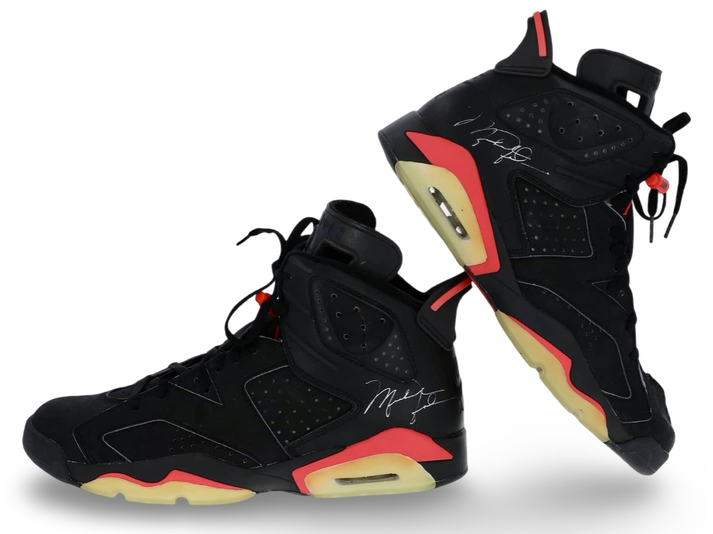
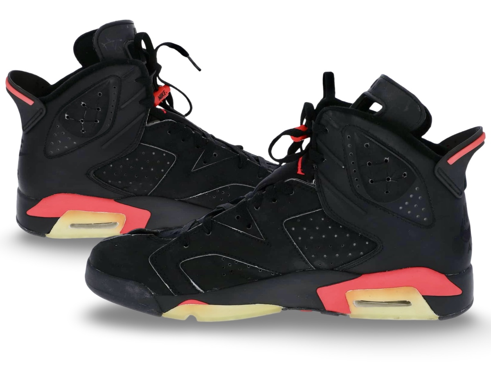
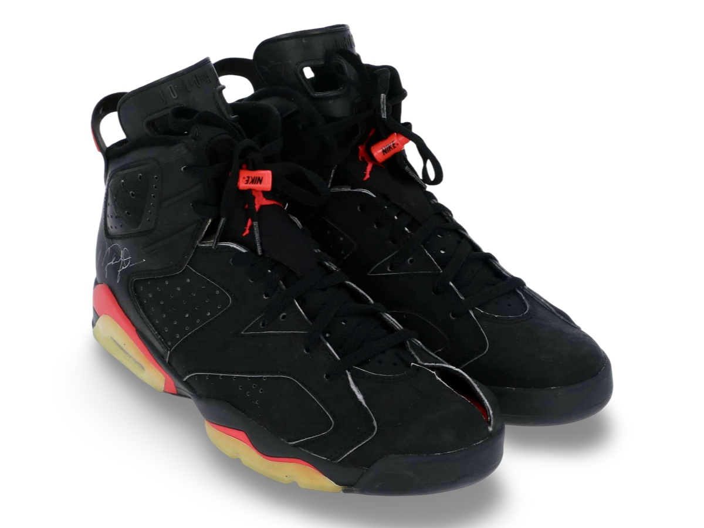
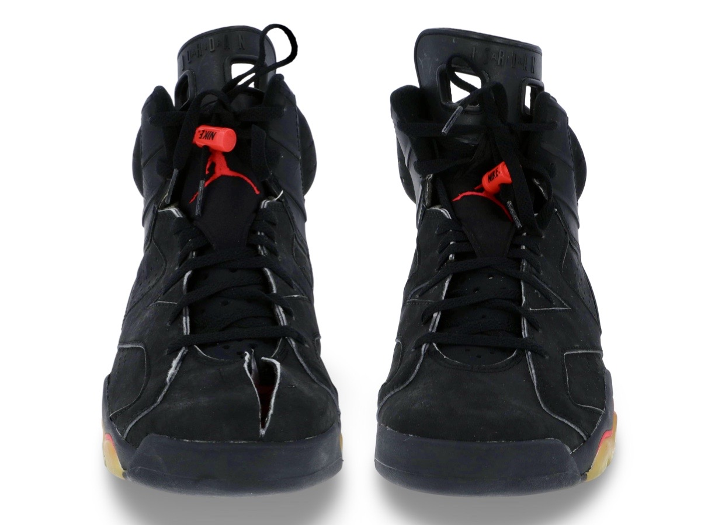

Air Jordan VI attributed to the game 4 of the NBA Finals.
Finals worn pair from 1991, when Michael hurt his toe and cut
the shoe open on camera to help relieve the pain.
Public Sale
- Auction House:Goldin Auctions
- Sale Date: March 15, 2025
- Lot #: 1
- Sale Price: $219,600
View Sale Listing - 2025→ View Sale Listing - 2021→ View Sale Listing - 2020→
Photo Match Details
- Photo-Matched: Yes
- Games Photo-Matched: 1
- Photo-Matched By:MeiGray, SIA, Davious
Research & Provenance
- Provenance comes from a Sonny Vaccaro, long time friend to Michael Jordan. the game.